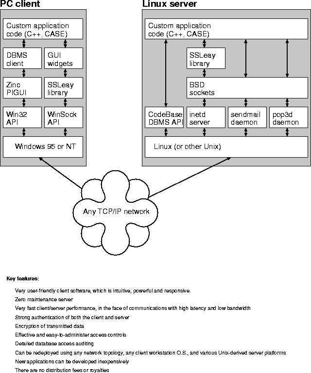

A client/server architecture consists of several parts:
To implement a client/server database, each of the components above must be implemented; either using existing software or by writing new code. We designed a new client/server system primarily in order to implement our own secure protocol. Accordingly, we wrote our own code to handle the database communication protocol. The other components are off-the-shelf, in order to reduce the programming work.
The following are the components used in our system:
| Location | Component | Technology |
| Client | operating system | Win32 |
| network communication package | TCP/IP + SSL | |
| client DBMS communication package | Our own code | |
| graphical user interface | Zinc | |
| Network | protocol | TCP/IP |
| Server | operating system | Linux |
| network communication package | TCP/IP + SSL | |
| database protocol + support code | Our own code | |
| authentication module | Our own code | |
| access control / logging module | Our own code | |
| package for physical DBMS access | CodeBase |
The architecture is illustrated in Figure 1.

Figure 1: System architecture